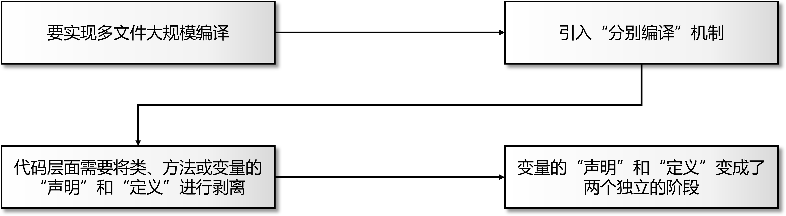

C++基础：变量的声明、定义、初始化（对三个不同概念的深入解读）

对于从 Java 等后发语言迁移过来的程序员来说，声明、定义、初始化通常是一个概念，因为对应到程序代码上是一个动作（一行代码），所以一般也是无差别地使用这三种术语指代一件事情。但是到了 C++ 里，要特别注意区分这三个术语，因为：它们确确实实是三个不同的概念，代表着三种不同的动作，或者说是变量初期的三种不同“状态” 。下面我们仔细梳理一下。
作为一个对比，我们先回顾一下在 Java 里是怎么定义一个变量的，你就能明白“为什么在 Java 里声明、定义、初始化是一个意思”。作为纯面向对象的编程语言，Java 里的变量只有类成员、方法的局部变量、从属于类/接口的全局变量（public static 成员变量）三种情形，其中类成员变量会自动初始化 默认值 ， 局部变量由编译器强制要求显式地初始化，而从属于类/接口的全局变量在类加载时就被默认初始化了，所以简单总结一下就是：Java 中的变量不是在声明（定义）时被默认初始化就是被强制要求显式地初始化，所以 Java 里不存在没有初始值的变量！Java 遵循了一种简单的哲学：只要变量定义出来，就一定要有值！要么编译器给它配默认值，要么强制你必须赋值，这规避了很多在C/C中因为疏忽而出现的很多“坑”。然后，我们来看一下 C，情况真得是复杂多了：
首先，在 C++ 中， 变量的“声明”和“定义”是天然被剥离开的两个概念 ，导致这种情况发生的主要原因是它的“分别编译”机制，这个我们后面细聊
其次，在 C++ 中，并不是所有的变量都会被默认初始化，例如函数体内的局部变量，因为在 C++ 中定义一个变量等于为其开辟存储空间，这是一个独立动作，并不是和初始化绑定在一起的， “定义”和“初始化”也是两个可以独立的操作 ，并不是一定会同时发生的！如果 C++ 像 Java 那样强制要求局部变量必须显式地初始化，那么，C里其实也就不用刻意区分“定义”和“初始化”两个阶段了，因为从代码上它们都将对应到同一行，是拆分不可的，但是 C 并没有这样做，原因就不像上面那么明了直白了， ChatGPT 的解释是说有为了要和C兼容的考虑，有效率和语义的考虑，这些我们就不再深究了
1. 声明 ≠ 定义
C++ 中的“声明”特指像下面这样的代码： extern int x; 通常它会出现在头文件中，此时，x 不但没有值（没有默认初始化），甚至没有开辟存储空间（没有被定义），它只是一个 “声明”，含义是：告诉编译器：确定有这么个名字和类型存在，不要报错，仅此而已 ，至于这个名字是在哪里定义的，又是什么值在编译阶段根本不需要知道，这是后面链接和运行时的故事。
前面已经提到了：在 C++ 中，变量的“声明”和“定义”是天然被剥离开的两个概念，导致这种情况发生的主要原因是它的“分别编译”机制，关于这个机制我们在 《C++基础：预处理器和头文件包含》 的第二节给出过解释，简单说，C++ 为了解决在编译一个源文件时依赖到在另一个源文件中定义的类、方法或变量的问题，而要求把它们的“声明”提取出来放到独立的头文件中，实现保留在原来独立的文件中，这样，会依赖到这些类、方法或变量的源文件只需要包含这个头文件，告诉编译器，代码里使用到的这些类、方法或变量都是有的，你不要报错，继续你的编译工作，至于具体它们是怎么工作的，等编译完成后，通过链接，它们就能配合在一起工作。所以导致“声明” 和 “定义”变成两个独立阶段的逻辑是这样的：

2. 定义 ≠ 初始化
倘若在一门编程语言里，如果定义一个变量时编译器总会给它设置一个初值值，那么也就没有必要刻意区分“定义”和“初始化”，但是在 C++ 里，虽然有的情况下定义一个变量会自动初始化一个默认什（默认初始化），但在另一些情况下也确实允许定义了一个变量而不给它赋值，那我们就不能武断地说：定义就是初始化了。
而从更底层的角度看，C++ 的“定义”是给变量分配存储空间，这是一个有明确意义的独立操作，开辟空间并不意味着一定要赋予一个初始值，所以初始化就是另一个独立的操作了。
3. 变量初始化的“规则”
那什么情况下定义变量会赋予一个初始值，什么情况下又不会呢？这要根据 变量类型和变量所处位置决定 ，以下是可能的四种情况：
-
一个定义在 函数体外的内置类型 的变量，如果没有显式初始化，C++ 会 对它进行 默认初始化 ，赋予默认值 0
-
一个定义在 函数体内的内置类型 的变量，如果没有显式初始化，C++ 不会 对它进行默认 初始化 ，所以它是 未初始化 （uninitialized）的，它的值是 未定义 （undefined）的！
-
一个定义在 函数体外的类对象 ，如果没有显式初始化，C++ 会 调用它的默认构造函数进行 默认初始化 ，并且对象中的内置类型成员 也会 被初始化为 0 (也就是所谓的零初始化）
-
一个定义在 函数体内的类对象 ，如果没有显式初始化，C++ 也会 调用它的默认构造函数进行 默认初始化 ，但对象中的内置类型成员 不会 被初始化，它的值是 未定义 （undefined）的
对于第4点：为什么函数体内的类对象会被“默认初始化”是因为：类对象是包括其成员变量的一个容器，如果 C++ 不初始化它，那它内部的“成员变量”就没有合法的“生存环境”或者说“安放位置”，那 C++ 就无法为这些变量分配内存空间（还不是初始化），我们知道，在函数被调用时在栈上会压入这个函数的栈帧，栈帧的空间是基于它内部的各种变量和参数汇总计算出来的，所以，C++ 必须初始化函数体内的类对象局部变量，为其内部表成员变量预留出相应的位置和存储空间！这里还有一个很 tricky 的地方，看下面的例子：
1 | // 测试栈对象：自动调用析构 |
这是第4点所说的情况，一个非常重要的地方在于：虽然 obj 是个对象，在这里这是”结结实实“长在”栈“上的，不是在堆上分配的！因为我们没有使用 new 操作符申请堆空间，那它就是在栈上的。你可以测试。
还要特别注意的是：未初始化的内置类型变量的值是“未定义”的，这里的“未定义”即不是没有值，也不是 0 ，而是一个完全无法预测的不确定值，这是栈内存中上一个函数遗留的内容，所以是完全不确定的。如果你编写这样的代码测试：
1 | void f() { |
在 debug 模式下你会看到 x 的值一直是 0 ，这并不构成对上述结论的反驳，真实的原因是：在 debug 模式下编译器
会帮助我们清理栈内存（一些地址空间直接填 0 ）。
4. C++ 和 Java 差异对比
结合我们前面的所有介绍，重新对比性地看一下 Java，应该理解地会更清晰透彻了：
4.1 变量声明和定义
| 语言 | 是否存在“只声明不定义” 的情况 | 是否存在“只定义不初始化” 的情况 |
|---|---|---|
| C++ | ✔ 有（ extern 变量声明） |
✔ 有（局部变量、局部类对象变量中的内置成员变量） |
| Java | ❌ 没有 | ❌ 没有 （编译器会报错） |
4.2 变量初始化
| 场景 | C++ | Java |
|---|---|---|
| 类成员 | 不一定初始化（取决于所属类对象是局部变量还是全局变量） | 自动初始化 |
| 局部变量 | 不初始化 | 强制初始化 |
| 全局变量 | 自动零初始化 | 类加载时初始化 |
关于 C++ 的类成员的初始化一项，再解释一遍，其实就是第3节中的3、4两点，换个角度重新表述一遍：类成员首先是从属于类对象的！类对象不管是函数内还是函数外，一定是会被默认初始化的！当类对象是局部变量（函数体内变量）时，类成员不会被初始化；当类对象是全局变量（函数体外变量）时，类成员会被默认初始化（自动零初始化）；
5. 一个“演示一切”的例子
以上为全部解释，最后还是要靠代码验证所有的情形。下面的代码会测试内置类型变量和类对象分别在函数体内和函数体外定义但不显式初始化时它们的默认值，程序会涵盖各种组合情况，并打印出每一种组合中各个变量的值，如果涉及到未初始化或为定义的值，只要不是编译错误，也打印出来，如果涉及编译错误，会注释掉：
1 |
|
程序输出：
1 | ==== 函数体外（全局变量） ==== |
C++基础：变量的声明、定义、初始化（对三个不同概念的深入解读）
https://laurence.enlightgram.com/cpp/cpp-declaration-definition-initialization/